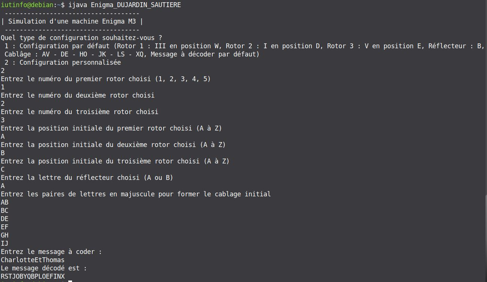
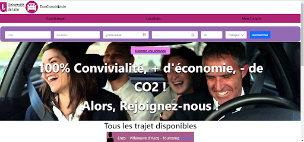
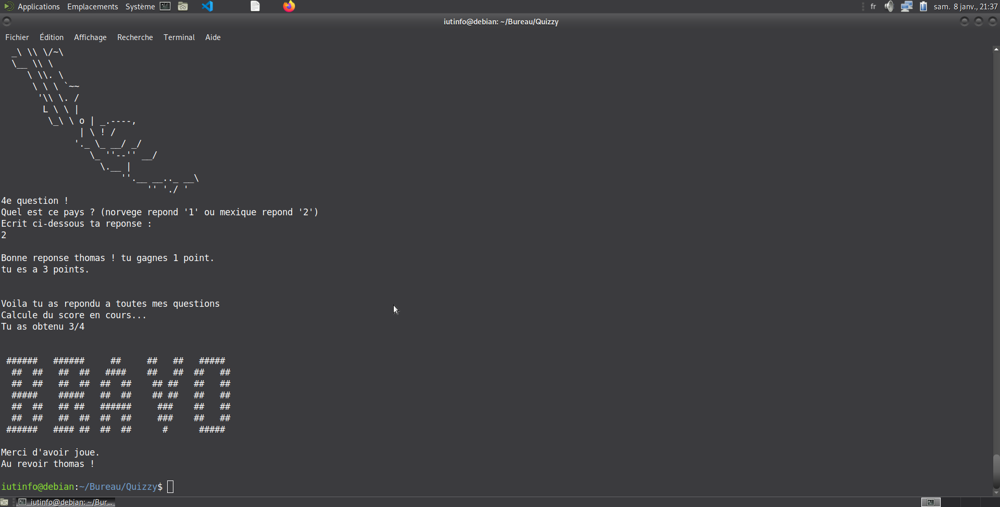
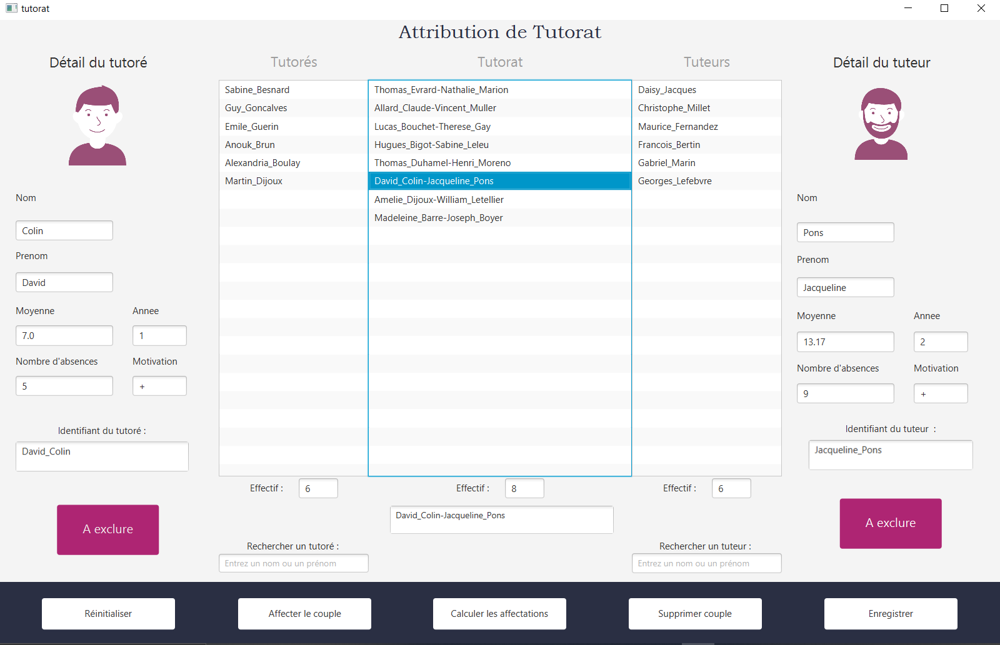
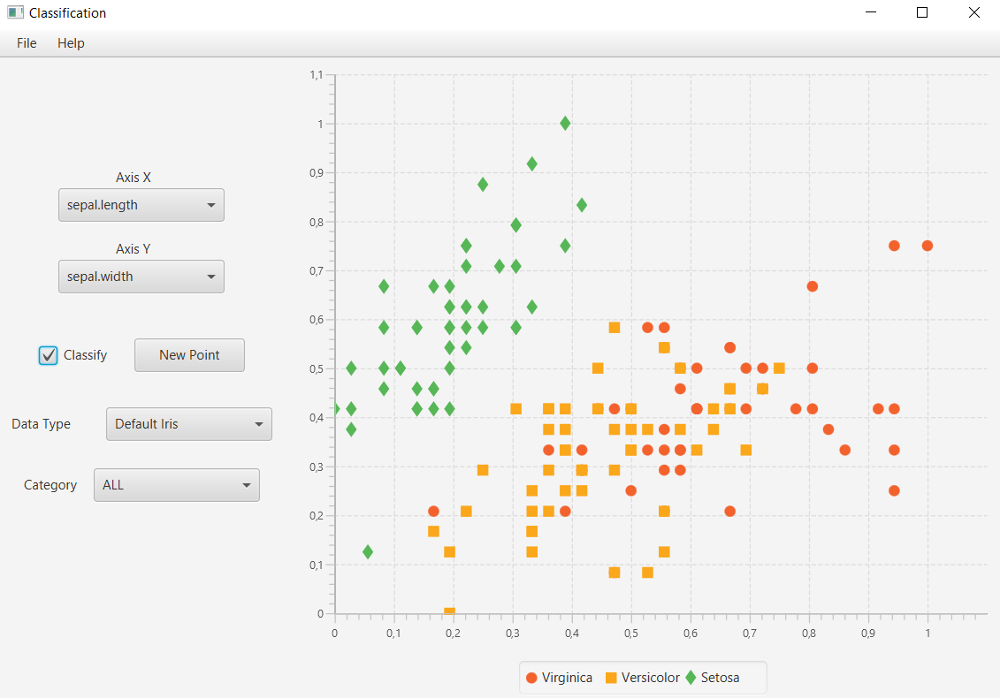

Pendant mes années, j’ai accompli une panoplie de projets scolaires et personnels que je mets à disposition sur mon gitHub dont en voici une partie :
Enigma
Voici mon 1er projet de mon BUT, nous devions écrire le code pour une machine permettant
d’encoder du texte en langage java simplifié (ijava) utilisé par exemple pendant la guerre.

TonCovoitUniv
Dans le cadre d’une politique de covoiturage, l'université nous avait demandé de créer une
plateforme de covoiturage afin de favoriser les déplacements en groupe au sein
de l'université : TonCovoitUniv est crée !
Le site permet de mettre en relation les étudiants qui propose un trajet avec ceux qui en demandaient.

Dep Info
Dans le cadre d’une création d’entreprise, nous devions en binôme créer notre entreprise.
Pour cela, nous avons tout imaginé ; le nom, ses services, son implantation… et son site web !
L’entreprise DepInfo fût crée avec à sa tête 2 jeunes personnages fictifs :
Siana Lefebvre et Marc Johns.

Quizzy
Nous devions créer un logiciel ludo-pédagogique à destination d’élèves d’écoles primaires,
avec une interface texte, Une seule contrainte était demandé : un aspect pédagogique.
Le reste était pour nous. Nous avons pensé à 3 mini-jeux dans un jeu ! Quizzy est né !

Tutorat
Dans le cadre de l'optimisation du tutorat pour une formation, une application
destinée aux professeurs à été créée par nos soins afin de générer des binômes d'étudiants
en fonction de l'algorithme du plus court chemin.
L'utilisateur importe les listes d'étudiants, lance l'affectation automatique
et a le choix entre la validation suivie de l'exportation ou alors s'il
n'est pas d'accord, a la possibilité de procéder manuellement, c'est-à-dire de
dissocier ou forcer l'association de deux étudiants.

Classification
Dans le cadre d'une classification de donnée, il nous a
fallu créé une application graphique
permettant la classification d'un nouvel objet
(une fleure ici) à partir de données déja existantes.
Nous devions développer un outil de chargement, classification, affichage, et
consultation d'un ensemble de données



 Mail
Mail
 Linkedin
Linkedin
 GitHub
GitHub